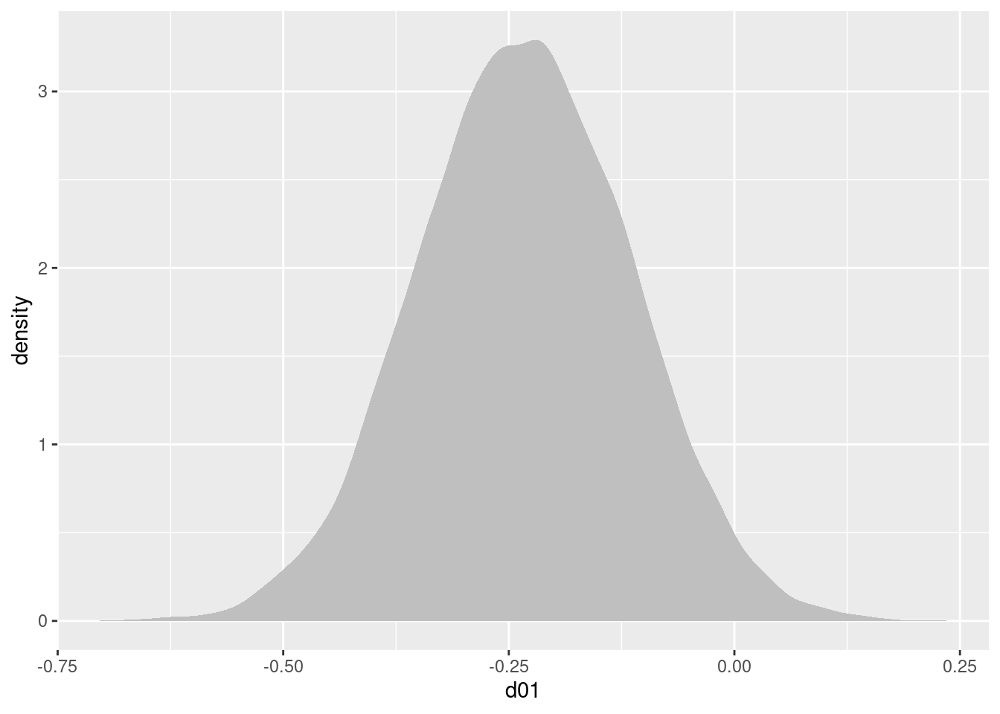

メタ分析
メタ分析の実施手順
まず，メタ分析について，以下のスライドを参考に，概要をつかんでください。
また，以下の国里の論文を読んで，メタ分析の必須事項についても確認ください。
Rstanでベイジアンメタ分析
メタ分析を行うRパッケージは，いろいろありますし，解説も多いので，ここでは，ベイジアンメタ分析について説明をしていきます。『Network Meta-Analysis for Decision-Making』 は，ベイジアンメタ分析を学ぶ上で良い本ですが，紹介されているコードがWinBUGSだったりします（これ以外の書籍もWinBUGSが多い）。Mac & Stanユーザーとしては，WinBUGSはきついので，第2章で紹介されている一対比較(つまりネットワークメタ分析ではない普通の)データの固定効果モデルのコードをStanコードに書き直して説明しています。
使用するパッケージ
以下のパッケージを使います。
library(cmdstanr)
library(tidyverse)
library(loo)
library(rstan)
library(bayesplot)
library(posterior)
library(tidybayes)データ
使用するのは，『Network Meta-Analysis for Decision-Making』の２章で紹介されている血栓溶解薬のデータです(Caldwell et la., 2005のデータ)。データセット全体の中からACC t-PA(治療0,今回はこれをコントロールにする)とPTCA(治療1)を比較した11の試験を使います。つまり，一対比較(Pairwise comparison)データです。
studyは研究のID，treatmentは治療の種類(0=ACC t-PA，1=PTCA)，deadは死者数，sampleSizeはその治療に参加した患者数です。studyNameは第1著者の姓か研究プロジェクト名， studyYearは論文の出版年です。
study <-c(1,2,3,4,5,6,7,8,9,10,11,1,2,3,4,5,6,7,8,9,10,11)
treatment <- c(0,0,0,0,0,0,0,0,0,0,0,1,1,1,1,1,1,1,1,1,1,1)
dead <- c(3,10,40,5,5,2,19,59,5,16,8,1,3,32,5,3,3,20,52,2,12,6)
sampleSize <- c(55,94,573,75,69,61,419,782,81,226,66,55,95,565,75,71,62,421,790,81,225,71)
treatmentName <- c("Acc_tPA","Acc_tPA","Acc_tPA","Acc_tPA","Acc_tPA","Acc_tPA","Acc_tPA","Acc_tPA","Acc_tPA","Acc_tPA","Acc_tPA","PTCA","PTCA","PTCA","PTCA","PTCA","PTCA","PTCA","PTCA","PTCA","PTCA","PTCA")
studyName <- c("Ribichini","Garcia","GUSTO-2","Vermeer","Schomig","LeMay","Bonnefoy","Andersen","Kastrati","Aversano","Grines","Ribichini","Garcia","GUSTO-2","Vermeer","Schomig","LeMay","Bonnefoy","Andersen","Kastrati","Aversano","Grines")
studyYear <- c(1996,1997,1997,1999,2000,2001,2002,2002,2002,2002,2002,1996,1997,1997,1999,2000,2001,2002,2002,2002,2002,2002)
# データフレーム化
data_pair <- data_frame(study,treatment,dead,sampleSize,treatmentName,studyName,studyYear)## Warning: `data_frame()` was deprecated in tibble 1.1.0.
## Please use `tibble()` instead.
## This warning is displayed once every 8 hours.
## Call `lifecycle::last_lifecycle_warnings()` to see where this warning was generated.以下のような感じのデータです。
head(data_pair)## # A tibble: 6 × 7
## study treatment dead sampleSize treatmentName studyName studyYear
## <dbl> <dbl> <dbl> <dbl> <chr> <chr> <dbl>
## 1 1 0 3 55 Acc_tPA Ribichini 1996
## 2 2 0 10 94 Acc_tPA Garcia 1997
## 3 3 0 40 573 Acc_tPA GUSTO-2 1997
## 4 4 0 5 75 Acc_tPA Vermeer 1999
## 5 5 0 5 69 Acc_tPA Schomig 2000
## 6 6 0 2 61 Acc_tPA LeMay 2001固定効果モデルのStanコード
まず，data{}ブロックにおいて，使用するデータの定義をしています。教科書は行列形式でdeadやsampleSizeを読み込む形式ですが，少し今後の拡張を考えると面倒です。まずlong型のデータセットにしてから（上記のデータはすでにそうなっています），各列をStanに読み込ませます。
parameters{}ブロックでは，推定するパラメータとして，mu(各研究におけるベースライン=ここでは治療0の効果)とd01(治療0と治療1の差=治療0よりも治療1が優れるor劣る効果の大きさ)を準備しています。
model{}ブロックでは，死者数が二項分布に従うとして，死者数が，binomial_logit(試験の参加人数，死亡確率を構成する式)から生成されます。なお，死亡確率を構成する式は，治療が0の場合，はその試験のmuのみで，治療1の場合は，その試験のmuにd01を足したものになります。d01とmuの事前分布としては，幅のひろーい正規分布としました。
generated quantities{}ブロックでは，d01から治療0に対する治療1のオッズ比や有害の確率を計算したり，モデル比較用の対数尤度(log_lik)も計算しています。
以下のStanコードを”pairwise_fixed_effect.stan”という名前で保存します。
data{
int ld; // length of data
int nt; // number of treatment
int ns; // number of study
int study[ld]; // vector of the study id
int treatment[ld]; //vector of the treatment id
int dead[ld]; // vector of the number of dead
int sampleSize[ld]; // vector of the number of patient
}
parameters{
real d01;
real mu[ns];
}
model{
for(i in 1:ld){
if(treatment[i]==0){
dead[i] ~ binomial_logit(sampleSize[i],mu[study[i]]);
}else{
dead[i] ~ binomial_logit(sampleSize[i],mu[study[i]]+d01);
}
}
// prior
d01~normal(0,10000);
mu~normal(0,10000);
}
generated quantities {
real OR01;
real Prob_harm;
real log_lik[ld];
OR01 = exp(d01);
Prob_harm = step(d01);
for(k in 1:ld){
if(treatment[k]==0){
log_lik[k] = binomial_logit_lpmf(dead[k]|sampleSize[k],mu[study[k]]);
}else{
log_lik[k] = binomial_logit_lpmf(dead[k]|sampleSize[k],mu[study[k]]+d01);
}
}
}
パラメータ推定
Stanコードが書けましたので，早速，コンパイル＆サンプリングをします。まず，以下推定のための設定です。
ld = length(study)
# コンパイル
fit_fixed <- cmdstan_model('pairwise_fixed_effect.stan')
# サンプリング
fit_fixed_mcmc <- fit_fixed$sample(
data=list(ld = ld,
nt = 2,
ns = 11,
study = study,
treatment = treatment,
dead = dead,
sampleSize = sampleSize),
seed = 123,
chains = 4,
iter_warmup = 500,
iter_sampling = 5500,
parallel_chains = 4)## Running MCMC with 4 parallel chains...
##
## Chain 1 Iteration: 1 / 6000 [ 0%] (Warmup)
## Chain 1 Iteration: 100 / 6000 [ 1%] (Warmup)
## Chain 1 Iteration: 200 / 6000 [ 3%] (Warmup)
## Chain 1 Iteration: 300 / 6000 [ 5%] (Warmup)
## Chain 1 Iteration: 400 / 6000 [ 6%] (Warmup)
## Chain 1 Iteration: 500 / 6000 [ 8%] (Warmup)
## Chain 1 Iteration: 501 / 6000 [ 8%] (Sampling)
## Chain 1 Iteration: 600 / 6000 [ 10%] (Sampling)
## Chain 1 Iteration: 700 / 6000 [ 11%] (Sampling)
## Chain 1 Iteration: 800 / 6000 [ 13%] (Sampling)
## Chain 1 Iteration: 900 / 6000 [ 15%] (Sampling)
## Chain 1 Iteration: 1000 / 6000 [ 16%] (Sampling)
## Chain 1 Iteration: 1100 / 6000 [ 18%] (Sampling)
## Chain 1 Iteration: 1200 / 6000 [ 20%] (Sampling)
## Chain 1 Iteration: 1300 / 6000 [ 21%] (Sampling)
## Chain 1 Iteration: 1400 / 6000 [ 23%] (Sampling)
## Chain 1 Iteration: 1500 / 6000 [ 25%] (Sampling)
## Chain 1 Iteration: 1600 / 6000 [ 26%] (Sampling)
## Chain 1 Iteration: 1700 / 6000 [ 28%] (Sampling)
## Chain 1 Iteration: 1800 / 6000 [ 30%] (Sampling)
## Chain 1 Iteration: 1900 / 6000 [ 31%] (Sampling)
## Chain 2 Iteration: 1 / 6000 [ 0%] (Warmup)
## Chain 2 Iteration: 100 / 6000 [ 1%] (Warmup)
## Chain 2 Iteration: 200 / 6000 [ 3%] (Warmup)
## Chain 2 Iteration: 300 / 6000 [ 5%] (Warmup)
## Chain 2 Iteration: 400 / 6000 [ 6%] (Warmup)
## Chain 2 Iteration: 500 / 6000 [ 8%] (Warmup)
## Chain 2 Iteration: 501 / 6000 [ 8%] (Sampling)
## Chain 2 Iteration: 600 / 6000 [ 10%] (Sampling)
## Chain 2 Iteration: 700 / 6000 [ 11%] (Sampling)
## Chain 2 Iteration: 800 / 6000 [ 13%] (Sampling)
## Chain 2 Iteration: 900 / 6000 [ 15%] (Sampling)
## Chain 2 Iteration: 1000 / 6000 [ 16%] (Sampling)
## Chain 2 Iteration: 1100 / 6000 [ 18%] (Sampling)
## Chain 2 Iteration: 1200 / 6000 [ 20%] (Sampling)
## Chain 2 Iteration: 1300 / 6000 [ 21%] (Sampling)
## Chain 2 Iteration: 1400 / 6000 [ 23%] (Sampling)
## Chain 2 Iteration: 1500 / 6000 [ 25%] (Sampling)
## Chain 2 Iteration: 1600 / 6000 [ 26%] (Sampling)
## Chain 2 Iteration: 1700 / 6000 [ 28%] (Sampling)
## Chain 2 Iteration: 1800 / 6000 [ 30%] (Sampling)
## Chain 3 Iteration: 1 / 6000 [ 0%] (Warmup)
## Chain 3 Iteration: 100 / 6000 [ 1%] (Warmup)
## Chain 3 Iteration: 200 / 6000 [ 3%] (Warmup)
## Chain 3 Iteration: 300 / 6000 [ 5%] (Warmup)
## Chain 3 Iteration: 400 / 6000 [ 6%] (Warmup)
## Chain 3 Iteration: 500 / 6000 [ 8%] (Warmup)
## Chain 3 Iteration: 501 / 6000 [ 8%] (Sampling)
## Chain 3 Iteration: 600 / 6000 [ 10%] (Sampling)
## Chain 3 Iteration: 700 / 6000 [ 11%] (Sampling)
## Chain 3 Iteration: 800 / 6000 [ 13%] (Sampling)
## Chain 3 Iteration: 900 / 6000 [ 15%] (Sampling)
## Chain 3 Iteration: 1000 / 6000 [ 16%] (Sampling)
## Chain 3 Iteration: 1100 / 6000 [ 18%] (Sampling)
## Chain 3 Iteration: 1200 / 6000 [ 20%] (Sampling)
## Chain 3 Iteration: 1300 / 6000 [ 21%] (Sampling)
## Chain 3 Iteration: 1400 / 6000 [ 23%] (Sampling)
## Chain 3 Iteration: 1500 / 6000 [ 25%] (Sampling)
## Chain 3 Iteration: 1600 / 6000 [ 26%] (Sampling)
## Chain 3 Iteration: 1700 / 6000 [ 28%] (Sampling)
## Chain 3 Iteration: 1800 / 6000 [ 30%] (Sampling)
## Chain 3 Iteration: 1900 / 6000 [ 31%] (Sampling)
## Chain 3 Iteration: 2000 / 6000 [ 33%] (Sampling)
## Chain 3 Iteration: 2100 / 6000 [ 35%] (Sampling)
## Chain 3 Iteration: 2200 / 6000 [ 36%] (Sampling)
## Chain 3 Iteration: 2300 / 6000 [ 38%] (Sampling)
## Chain 3 Iteration: 2400 / 6000 [ 40%] (Sampling)
## Chain 3 Iteration: 2500 / 6000 [ 41%] (Sampling)
## Chain 3 Iteration: 2600 / 6000 [ 43%] (Sampling)
## Chain 3 Iteration: 2700 / 6000 [ 45%] (Sampling)
## Chain 3 Iteration: 2800 / 6000 [ 46%] (Sampling)
## Chain 3 Iteration: 2900 / 6000 [ 48%] (Sampling)
## Chain 3 Iteration: 3000 / 6000 [ 50%] (Sampling)
## Chain 3 Iteration: 3100 / 6000 [ 51%] (Sampling)
## Chain 4 Iteration: 1 / 6000 [ 0%] (Warmup)
## Chain 4 Iteration: 100 / 6000 [ 1%] (Warmup)
## Chain 4 Iteration: 200 / 6000 [ 3%] (Warmup)
## Chain 4 Iteration: 300 / 6000 [ 5%] (Warmup)
## Chain 4 Iteration: 400 / 6000 [ 6%] (Warmup)
## Chain 4 Iteration: 500 / 6000 [ 8%] (Warmup)
## Chain 4 Iteration: 501 / 6000 [ 8%] (Sampling)
## Chain 4 Iteration: 600 / 6000 [ 10%] (Sampling)
## Chain 4 Iteration: 700 / 6000 [ 11%] (Sampling)
## Chain 4 Iteration: 800 / 6000 [ 13%] (Sampling)
## Chain 4 Iteration: 900 / 6000 [ 15%] (Sampling)
## Chain 4 Iteration: 1000 / 6000 [ 16%] (Sampling)
## Chain 4 Iteration: 1100 / 6000 [ 18%] (Sampling)
## Chain 4 Iteration: 1200 / 6000 [ 20%] (Sampling)
## Chain 4 Iteration: 1300 / 6000 [ 21%] (Sampling)
## Chain 4 Iteration: 1400 / 6000 [ 23%] (Sampling)
## Chain 4 Iteration: 1500 / 6000 [ 25%] (Sampling)
## Chain 4 Iteration: 1600 / 6000 [ 26%] (Sampling)
## Chain 4 Iteration: 1700 / 6000 [ 28%] (Sampling)
## Chain 4 Iteration: 1800 / 6000 [ 30%] (Sampling)
## Chain 4 Iteration: 1900 / 6000 [ 31%] (Sampling)
## Chain 4 Iteration: 2000 / 6000 [ 33%] (Sampling)
## Chain 4 Iteration: 2100 / 6000 [ 35%] (Sampling)
## Chain 4 Iteration: 2200 / 6000 [ 36%] (Sampling)
## Chain 4 Iteration: 2300 / 6000 [ 38%] (Sampling)
## Chain 4 Iteration: 2400 / 6000 [ 40%] (Sampling)
## Chain 4 Iteration: 2500 / 6000 [ 41%] (Sampling)
## Chain 4 Iteration: 2600 / 6000 [ 43%] (Sampling)
## Chain 4 Iteration: 2700 / 6000 [ 45%] (Sampling)
## Chain 4 Iteration: 2800 / 6000 [ 46%] (Sampling)
## Chain 4 Iteration: 2900 / 6000 [ 48%] (Sampling)
## Chain 4 Iteration: 3000 / 6000 [ 50%] (Sampling)
## Chain 4 Iteration: 3100 / 6000 [ 51%] (Sampling)
## Chain 4 Iteration: 3200 / 6000 [ 53%] (Sampling)
## Chain 1 Iteration: 2000 / 6000 [ 33%] (Sampling)
## Chain 1 Iteration: 2100 / 6000 [ 35%] (Sampling)
## Chain 1 Iteration: 2200 / 6000 [ 36%] (Sampling)
## Chain 1 Iteration: 2300 / 6000 [ 38%] (Sampling)
## Chain 1 Iteration: 2400 / 6000 [ 40%] (Sampling)
## Chain 1 Iteration: 2500 / 6000 [ 41%] (Sampling)
## Chain 1 Iteration: 2600 / 6000 [ 43%] (Sampling)
## Chain 1 Iteration: 2700 / 6000 [ 45%] (Sampling)
## Chain 1 Iteration: 2800 / 6000 [ 46%] (Sampling)
## Chain 1 Iteration: 2900 / 6000 [ 48%] (Sampling)
## Chain 1 Iteration: 3000 / 6000 [ 50%] (Sampling)
## Chain 1 Iteration: 3100 / 6000 [ 51%] (Sampling)
## Chain 1 Iteration: 3200 / 6000 [ 53%] (Sampling)
## Chain 1 Iteration: 3300 / 6000 [ 55%] (Sampling)
## Chain 1 Iteration: 3400 / 6000 [ 56%] (Sampling)
## Chain 1 Iteration: 3500 / 6000 [ 58%] (Sampling)
## Chain 1 Iteration: 3600 / 6000 [ 60%] (Sampling)
## Chain 1 Iteration: 3700 / 6000 [ 61%] (Sampling)
## Chain 1 Iteration: 3800 / 6000 [ 63%] (Sampling)
## Chain 1 Iteration: 3900 / 6000 [ 65%] (Sampling)
## Chain 1 Iteration: 4000 / 6000 [ 66%] (Sampling)
## Chain 1 Iteration: 4100 / 6000 [ 68%] (Sampling)
## Chain 1 Iteration: 4200 / 6000 [ 70%] (Sampling)
## Chain 1 Iteration: 4300 / 6000 [ 71%] (Sampling)
## Chain 1 Iteration: 4400 / 6000 [ 73%] (Sampling)
## Chain 1 Iteration: 4500 / 6000 [ 75%] (Sampling)
## Chain 1 Iteration: 4600 / 6000 [ 76%] (Sampling)
## Chain 1 Iteration: 4700 / 6000 [ 78%] (Sampling)
## Chain 1 Iteration: 4800 / 6000 [ 80%] (Sampling)
## Chain 1 Iteration: 4900 / 6000 [ 81%] (Sampling)
## Chain 1 Iteration: 5000 / 6000 [ 83%] (Sampling)
## Chain 1 Iteration: 5100 / 6000 [ 85%] (Sampling)
## Chain 1 Iteration: 5200 / 6000 [ 86%] (Sampling)
## Chain 1 Iteration: 5300 / 6000 [ 88%] (Sampling)
## Chain 2 Iteration: 1900 / 6000 [ 31%] (Sampling)
## Chain 2 Iteration: 2000 / 6000 [ 33%] (Sampling)
## Chain 2 Iteration: 2100 / 6000 [ 35%] (Sampling)
## Chain 2 Iteration: 2200 / 6000 [ 36%] (Sampling)
## Chain 2 Iteration: 2300 / 6000 [ 38%] (Sampling)
## Chain 2 Iteration: 2400 / 6000 [ 40%] (Sampling)
## Chain 2 Iteration: 2500 / 6000 [ 41%] (Sampling)
## Chain 2 Iteration: 2600 / 6000 [ 43%] (Sampling)
## Chain 2 Iteration: 2700 / 6000 [ 45%] (Sampling)
## Chain 2 Iteration: 2800 / 6000 [ 46%] (Sampling)
## Chain 2 Iteration: 2900 / 6000 [ 48%] (Sampling)
## Chain 2 Iteration: 3000 / 6000 [ 50%] (Sampling)
## Chain 2 Iteration: 3100 / 6000 [ 51%] (Sampling)
## Chain 2 Iteration: 3200 / 6000 [ 53%] (Sampling)
## Chain 2 Iteration: 3300 / 6000 [ 55%] (Sampling)
## Chain 2 Iteration: 3400 / 6000 [ 56%] (Sampling)
## Chain 2 Iteration: 3500 / 6000 [ 58%] (Sampling)
## Chain 2 Iteration: 3600 / 6000 [ 60%] (Sampling)
## Chain 2 Iteration: 3700 / 6000 [ 61%] (Sampling)
## Chain 2 Iteration: 3800 / 6000 [ 63%] (Sampling)
## Chain 2 Iteration: 3900 / 6000 [ 65%] (Sampling)
## Chain 2 Iteration: 4000 / 6000 [ 66%] (Sampling)
## Chain 2 Iteration: 4100 / 6000 [ 68%] (Sampling)
## Chain 2 Iteration: 4200 / 6000 [ 70%] (Sampling)
## Chain 2 Iteration: 4300 / 6000 [ 71%] (Sampling)
## Chain 2 Iteration: 4400 / 6000 [ 73%] (Sampling)
## Chain 2 Iteration: 4500 / 6000 [ 75%] (Sampling)
## Chain 2 Iteration: 4600 / 6000 [ 76%] (Sampling)
## Chain 2 Iteration: 4700 / 6000 [ 78%] (Sampling)
## Chain 2 Iteration: 4800 / 6000 [ 80%] (Sampling)
## Chain 2 Iteration: 4900 / 6000 [ 81%] (Sampling)
## Chain 2 Iteration: 5000 / 6000 [ 83%] (Sampling)
## Chain 2 Iteration: 5100 / 6000 [ 85%] (Sampling)
## Chain 3 Iteration: 3200 / 6000 [ 53%] (Sampling)
## Chain 3 Iteration: 3300 / 6000 [ 55%] (Sampling)
## Chain 3 Iteration: 3400 / 6000 [ 56%] (Sampling)
## Chain 3 Iteration: 3500 / 6000 [ 58%] (Sampling)
## Chain 3 Iteration: 3600 / 6000 [ 60%] (Sampling)
## Chain 3 Iteration: 3700 / 6000 [ 61%] (Sampling)
## Chain 3 Iteration: 3800 / 6000 [ 63%] (Sampling)
## Chain 3 Iteration: 3900 / 6000 [ 65%] (Sampling)
## Chain 3 Iteration: 4000 / 6000 [ 66%] (Sampling)
## Chain 3 Iteration: 4100 / 6000 [ 68%] (Sampling)
## Chain 3 Iteration: 4200 / 6000 [ 70%] (Sampling)
## Chain 3 Iteration: 4300 / 6000 [ 71%] (Sampling)
## Chain 3 Iteration: 4400 / 6000 [ 73%] (Sampling)
## Chain 3 Iteration: 4500 / 6000 [ 75%] (Sampling)
## Chain 3 Iteration: 4600 / 6000 [ 76%] (Sampling)
## Chain 3 Iteration: 4700 / 6000 [ 78%] (Sampling)
## Chain 3 Iteration: 4800 / 6000 [ 80%] (Sampling)
## Chain 3 Iteration: 4900 / 6000 [ 81%] (Sampling)
## Chain 3 Iteration: 5000 / 6000 [ 83%] (Sampling)
## Chain 4 Iteration: 3300 / 6000 [ 55%] (Sampling)
## Chain 4 Iteration: 3400 / 6000 [ 56%] (Sampling)
## Chain 4 Iteration: 3500 / 6000 [ 58%] (Sampling)
## Chain 4 Iteration: 3600 / 6000 [ 60%] (Sampling)
## Chain 4 Iteration: 3700 / 6000 [ 61%] (Sampling)
## Chain 4 Iteration: 3800 / 6000 [ 63%] (Sampling)
## Chain 4 Iteration: 3900 / 6000 [ 65%] (Sampling)
## Chain 4 Iteration: 4000 / 6000 [ 66%] (Sampling)
## Chain 4 Iteration: 4100 / 6000 [ 68%] (Sampling)
## Chain 4 Iteration: 4200 / 6000 [ 70%] (Sampling)
## Chain 4 Iteration: 4300 / 6000 [ 71%] (Sampling)
## Chain 4 Iteration: 4400 / 6000 [ 73%] (Sampling)
## Chain 4 Iteration: 4500 / 6000 [ 75%] (Sampling)
## Chain 4 Iteration: 4600 / 6000 [ 76%] (Sampling)
## Chain 4 Iteration: 4700 / 6000 [ 78%] (Sampling)
## Chain 4 Iteration: 4800 / 6000 [ 80%] (Sampling)
## Chain 4 Iteration: 4900 / 6000 [ 81%] (Sampling)
## Chain 1 Iteration: 5400 / 6000 [ 90%] (Sampling)
## Chain 1 Iteration: 5500 / 6000 [ 91%] (Sampling)
## Chain 1 Iteration: 5600 / 6000 [ 93%] (Sampling)
## Chain 1 Iteration: 5700 / 6000 [ 95%] (Sampling)
## Chain 1 Iteration: 5800 / 6000 [ 96%] (Sampling)
## Chain 1 Iteration: 5900 / 6000 [ 98%] (Sampling)
## Chain 1 Iteration: 6000 / 6000 [100%] (Sampling)
## Chain 2 Iteration: 5200 / 6000 [ 86%] (Sampling)
## Chain 2 Iteration: 5300 / 6000 [ 88%] (Sampling)
## Chain 2 Iteration: 5400 / 6000 [ 90%] (Sampling)
## Chain 2 Iteration: 5500 / 6000 [ 91%] (Sampling)
## Chain 2 Iteration: 5600 / 6000 [ 93%] (Sampling)
## Chain 2 Iteration: 5700 / 6000 [ 95%] (Sampling)
## Chain 2 Iteration: 5800 / 6000 [ 96%] (Sampling)
## Chain 2 Iteration: 5900 / 6000 [ 98%] (Sampling)
## Chain 2 Iteration: 6000 / 6000 [100%] (Sampling)
## Chain 3 Iteration: 5100 / 6000 [ 85%] (Sampling)
## Chain 3 Iteration: 5200 / 6000 [ 86%] (Sampling)
## Chain 3 Iteration: 5300 / 6000 [ 88%] (Sampling)
## Chain 3 Iteration: 5400 / 6000 [ 90%] (Sampling)
## Chain 3 Iteration: 5500 / 6000 [ 91%] (Sampling)
## Chain 3 Iteration: 5600 / 6000 [ 93%] (Sampling)
## Chain 3 Iteration: 5700 / 6000 [ 95%] (Sampling)
## Chain 3 Iteration: 5800 / 6000 [ 96%] (Sampling)
## Chain 3 Iteration: 5900 / 6000 [ 98%] (Sampling)
## Chain 3 Iteration: 6000 / 6000 [100%] (Sampling)
## Chain 4 Iteration: 5000 / 6000 [ 83%] (Sampling)
## Chain 4 Iteration: 5100 / 6000 [ 85%] (Sampling)
## Chain 4 Iteration: 5200 / 6000 [ 86%] (Sampling)
## Chain 4 Iteration: 5300 / 6000 [ 88%] (Sampling)
## Chain 4 Iteration: 5400 / 6000 [ 90%] (Sampling)
## Chain 4 Iteration: 5500 / 6000 [ 91%] (Sampling)
## Chain 4 Iteration: 5600 / 6000 [ 93%] (Sampling)
## Chain 4 Iteration: 5700 / 6000 [ 95%] (Sampling)
## Chain 4 Iteration: 5800 / 6000 [ 96%] (Sampling)
## Chain 4 Iteration: 5900 / 6000 [ 98%] (Sampling)
## Chain 4 Iteration: 6000 / 6000 [100%] (Sampling)
## Chain 1 finished in 0.5 seconds.
## Chain 2 finished in 0.4 seconds.
## Chain 3 finished in 0.4 seconds.
## Chain 4 finished in 0.4 seconds.
##
## All 4 chains finished successfully.
## Mean chain execution time: 0.4 seconds.
## Total execution time: 0.6 seconds.推定結果
結果を簡単に確認します。
fit_fixed_mcmc$summary()## # A tibble: 37 × 10
## variable mean median sd mad q5 q95 rhat ess_bulk
## <chr> <dbl> <dbl> <dbl> <dbl> <dbl> <dbl> <dbl> <dbl>
## 1 lp__ -1163. -1163. 2.46 2.37 -1168. -1160. 1.00 8787.
## 2 d01 -0.233 -0.233 0.119 0.120 -0.427 -0.0375 1.00 21792.
## 3 mu[1] -3.30 -3.26 0.535 0.522 -4.24 -2.48 1.00 36729.
## 4 mu[2] -2.53 -2.52 0.297 0.291 -3.04 -2.06 1.00 32652.
## 5 mu[3] -2.59 -2.59 0.133 0.134 -2.82 -2.38 1.00 33102.
## 6 mu[4] -2.58 -2.56 0.341 0.333 -3.17 -2.05 1.00 39300.
## 7 mu[5] -2.75 -2.73 0.377 0.370 -3.41 -2.17 1.00 38113.
## 8 mu[6] -3.15 -3.12 0.485 0.476 -4.01 -2.41 1.00 36256.
## 9 mu[7] -2.92 -2.92 0.171 0.171 -3.21 -2.65 1.00 35735.
## 10 mu[8] -2.47 -2.47 0.113 0.113 -2.66 -2.29 1.00 30578.
## # … with 27 more rows, and 1 more variable: ess_tail <dbl>見にくいので，一部の結果のみを示します。若干ズレはありますが，教科書とほぼ同じ推定値になりました（関心のあるパラメータのみ掲載）。Rhatからサンプリングも問題なさそうです。
| mean | sd | Rhat | |
|---|---|---|---|
| d01 | -0.231 | 0.119 | 1.000 |
| OR01 | 0.798 | 0.095 | 1.000 |
| Prob_harm | 0.0238 | 0.152 | 1.000 |
以下はMCMCについての診断結果です。問題はなさそうです。
fit_fixed_mcmc$cmdstan_diagnose()## Processing csv files: /tmp/RtmpQUT3ms/pairwise_fixed_effect-202203312138-1-0f3f86.csv, /tmp/RtmpQUT3ms/pairwise_fixed_effect-202203312138-2-0f3f86.csv, /tmp/RtmpQUT3ms/pairwise_fixed_effect-202203312138-3-0f3f86.csv, /tmp/RtmpQUT3ms/pairwise_fixed_effect-202203312138-4-0f3f86.csv
##
## Checking sampler transitions treedepth.
## Treedepth satisfactory for all transitions.
##
## Checking sampler transitions for divergences.
## No divergent transitions found.
##
## Checking E-BFMI - sampler transitions HMC potential energy.
## E-BFMI satisfactory.
##
## Effective sample size satisfactory.
##
## Split R-hat values satisfactory all parameters.
##
## Processing complete, no problems detected.以下のようにトレースプロットを示すことができます。d01(治療0と治療1の差)の場合は，以下になります。なお，各種MCMCの収束判断には，bayesplotをつかうのが便利です。
# ggplotやtidyverseで扱いやすく処理する
mcmc_samples = as_draws_df(fit_fixed_mcmc$draws())
# d01のtrace plot
mcmc_samples %>%
mutate(chain = as.factor(.chain)) %>%
ggplot(aes(x = .iteration, y = d01, group = .chain, color = chain)) +
geom_line()
d01(治療0と治療1の差)の事後分布は，以下になります。
mcmc_samples %>%
ggplot(aes(x=d01)) +
stat_density(fill = "gray75")
解釈しやすいように，治療0に対する治療1のオッズ比の事後分布をプロットしてみます。ACC t-PAと比べて，PTCAが死亡率を下げることが分かりますね。
mcmc_samples %>%
ggplot(aes(x=OR01)) +
stat_density(fill = "gray75") +
stat_pointintervalh(aes(y = -0.05), point_interval = mean_qi, .width = .95) +
xlim(0.5,1.4)+
labs(x="Odds ratio")単体では意味がないですが，モデル比較をすることもあるかと思います。上記のStanコードでは対数尤度を計算をしているのでWAICの計算ができます。以下では，mcmc_samplesからlog_likだけ抽出して，マトリックス形式にした上で，looパッケージでWAICを計算しています。
mcmc_samples %>%
select(starts_with("log_lik")) %>%
as.matrix() %>%
waic()##
## Computed from 22000 by 22 log-likelihood matrix
##
## Estimate SE
## elpd_waic -55.8 2.9
## p_waic 6.6 1.0
## waic 111.6 5.8
##
## 4 (18.2%) p_waic estimates greater than 0.4. We recommend trying loo instead.これで，メタ分析の基本形である固定効果モデルをStanで実行できました！